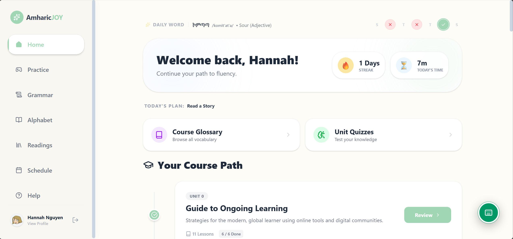
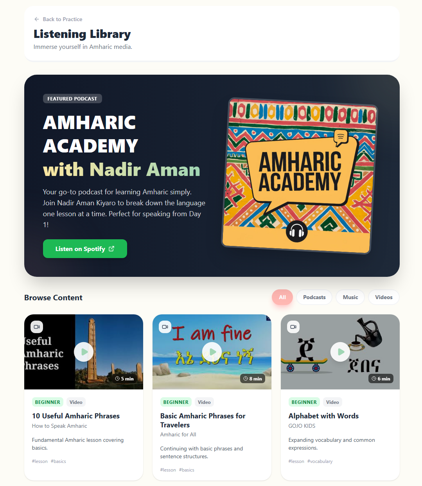
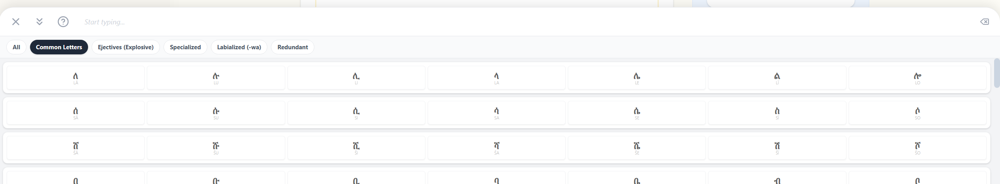
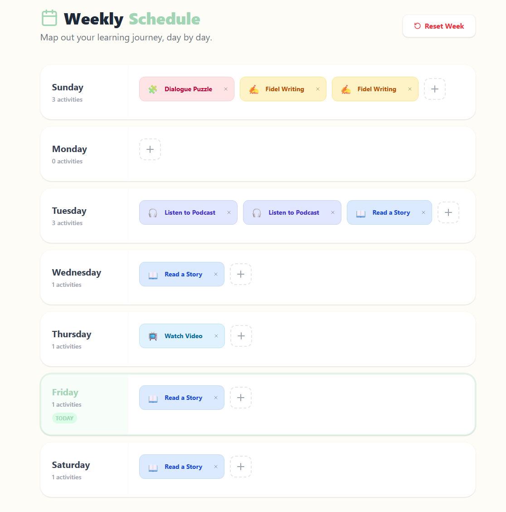
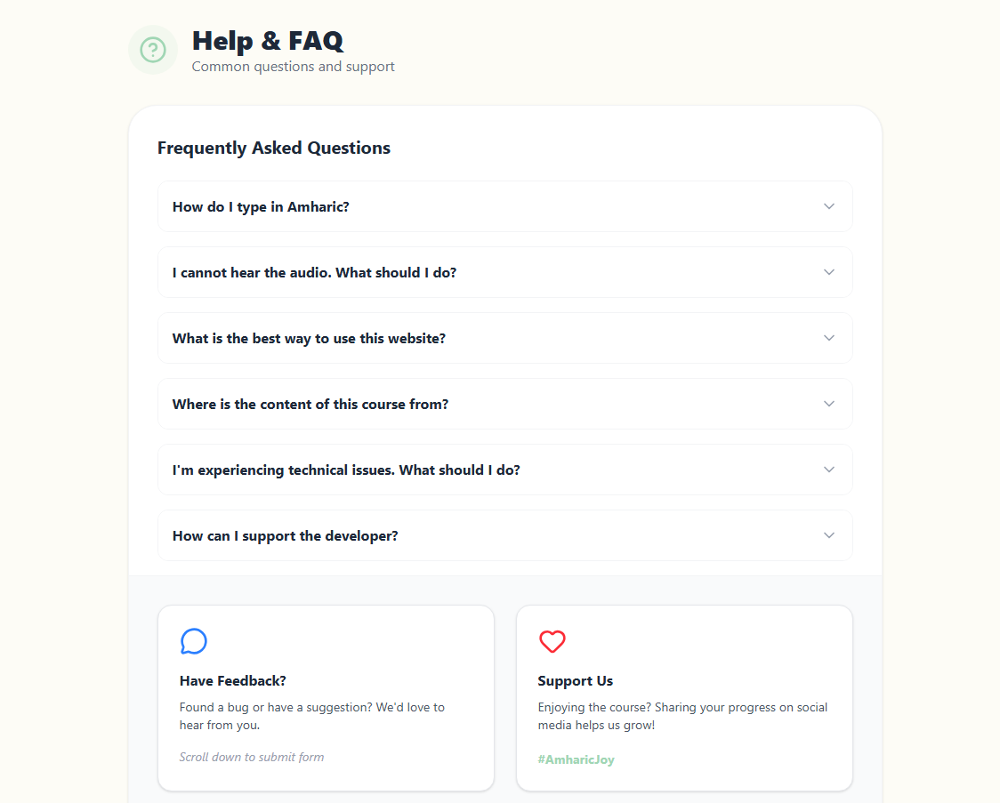

◇ CHAPTER 03
Amharic Joy: Filling the Education Void.
DIFFICULTY
★★★★★
PARTY SIZE
Solo IDer
DURATION
Ongoing
STATUS
● Live Build
▸ MISSION BRIEFING - THE PROBLEM
Despite being a major world language, Amharic is nearly invisible on mainstream learning platforms like Duolingo.
Existing resources are painfully fragmented—one site might list grammar rules, while another shows random vocabulary words. There is rarely a centralized, lesson-based curriculum that guides a learner from zero to fluency. This barrier prevents people from connecting with Amharic culture, making the learning journey feel like a slog rather than a joy.
⚠ ACTIVE DEBUFFS ON PARTY
DEBUFF · 01
Fragmented, non-centralized online resources.
DEBUFF · 02
Absent from major "trustworthy" learning apps.
DEBUFF · 03
Lack of engaging, fun-focused lesson structures.
◆ STRATEGY - THE SOLUTION
BACKWARD DESIGN + AI
I built Amharic Joy - a centralized hub blending the science of learning with modern AI technology.
Using Backward Design, I started with the end goal: fluent communication and cultural joy. I integrated AI to rapidly iterate on the UI while applying the Science of Learning to craft a UX that sticks. The result is a comprehensive platform that includes a roadmap, cumulative exams, and immersive practice tools.
✦ BUFFS GAINED
Centralized Course Roadmap
AI-Optimized Interface
Science-Backed UX
Fun-First Pedagogy
◇ THE DUNGEON MAP
PLATFORM ARCHITECTURE
FACILITY I
DASHBOARD & MOTIVATION

The dashboard mimics a professional learning platform to provide a sense of stability and "trustworthy" design. I implemented lesson streaks and daily word features to drive daily engagement and support learner motivation through consistent small wins.
FACILITY II
20-UNIT COURSE PATH

Based on the Peace Corps Amharic Training Manual, I developed a 20-unit path. I designed a clear visual status system: Black for unstarted, Yellow for in-progress, and Green for finished units that are ready for spaced-repetition review.
FACILITY III
THE ULTIMATE PRACTICE HUB

The Practice Hub is the engine of the platform, offering multi-modal activities to reinforce learning. Each tool is designed to target a specific cognitive skill:

ARTIFACT: AMHARIC TYPER
A rapid-fire game for building phonetic recall and typing speed.

ARTIFACT: FIDEL WRITER
Precision practice for the Ge'ez script and stroke order.

ARTIFACT: LISTENING LAB
Native speaker immersion via songs, podcasts, and lesson audio.

ARTIFACT: VIRTUAL KEYBOARD
Zero-install Amharic input method for seamless participation.
FACILITY IV
READING & SCENARIO PRACTICE

Reading practice uses scenario-based stories with full listening support. I integrated a one-click "Plus" button so learners can instantly add key vocabulary to their personal flashcard decks for later review.
FACILITY V
SCHEDULER & FEEDBACK

SYSTEM: WEEKLY SCHEDULER
Managing cognitive load through personalized time management.

SYSTEM: HELP & FEEDBACK
Continuous improvement loops based on real learner data.
★ ★ ★ LEGENDARY LOOT ★ ★ ★
The Amharic Joy - Full Toolkit
A high-engagement arsenal of tools designed to move learners from "Fidel confused" to "culture connected."
+400 XP · BOSS DEFEATED
+400 XP · UPCOMING MISSION
★ TOTAL XP EARNED1,200 / 1,200